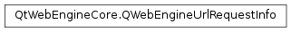

QWebEngineUrlRequestInfo¶
Synopsis¶
Functions¶
- def
block(shouldBlock) - def
changed() - def
firstPartyUrl() - def
navigationType() - def
redirect(url) - def
requestMethod() - def
requestUrl() - def
resourceType() - def
setHttpHeader(name, value)
Detailed Description¶
The
PySide2.QtWebEngineCore.QWebEngineUrlRequestInfoclass provides information about URL requests.The
PySide2.QtWebEngineCore.QWebEngineUrlRequestInfois useful for setting extra header fields for requests or for redirecting certain requests without payload data to another URL. This class cannot be instantiated or copied by the user, instead it will be created by Qt and sent through the virtual functionQWebEngineUrlRequestInterceptor.interceptRequest()if an interceptor has been set.
-
PySide2.QtWebEngineCore.QWebEngineUrlRequestInfo.ResourceType¶ This enum type holds the type of the requested resource:
Constant Description QWebEngineUrlRequestInfo.ResourceTypeMainFrame Top level page. QWebEngineUrlRequestInfo.ResourceTypeSubFrame Frame or iframe. QWebEngineUrlRequestInfo.ResourceTypeStylesheet A CSS stylesheet. QWebEngineUrlRequestInfo.ResourceTypeScript An external script. QWebEngineUrlRequestInfo.ResourceTypeImage An image (JPG, GIF, PNG, and so on). QWebEngineUrlRequestInfo.ResourceTypeFontResource A font. QWebEngineUrlRequestInfo.ResourceTypeSubResource An “other” subresource. QWebEngineUrlRequestInfo.ResourceTypeObject An object (or embed) tag for a plugin or a resource that a plugin requested. QWebEngineUrlRequestInfo.ResourceTypeMedia A media resource. QWebEngineUrlRequestInfo.ResourceTypeWorker The main resource of a dedicated worker. QWebEngineUrlRequestInfo.ResourceTypeSharedWorker The main resource of a shared worker. QWebEngineUrlRequestInfo.ResourceTypePrefetch An explicitly requested prefetch. QWebEngineUrlRequestInfo.ResourceTypeFavicon A favicon. QWebEngineUrlRequestInfo.ResourceTypeXhr An XMLHttpRequest. QWebEngineUrlRequestInfo.ResourceTypePing A ping request for <a ping>. QWebEngineUrlRequestInfo.ResourceTypeServiceWorker The main resource of a service worker. QWebEngineUrlRequestInfo.ResourceTypeCspReport A report of Content Security Policy (CSP) violations. CSP reports are in JSON format and they are delivered by HTTP POST requests to specified servers. (Added in Qt 5.7) QWebEngineUrlRequestInfo.ResourceTypePluginResource A resource requested by a plugin. (Added in Qt 5.7) QWebEngineUrlRequestInfo.ResourceTypeUnknown Unknown request type. Note
For forward compatibility all values not matched should be treated as unknown, not just
ResourceTypeUnknown.
This enum type describes the navigation type of the request:
Constant Description QWebEngineUrlRequestInfo.NavigationTypeLink Navigation initiated by clicking a link. QWebEngineUrlRequestInfo.NavigationTypeTyped Navigation explicitly initiated by typing a URL. QWebEngineUrlRequestInfo.NavigationTypeFormSubmitted Navigation submits a form. QWebEngineUrlRequestInfo.NavigationTypeBackForward Navigation initiated by a history action. QWebEngineUrlRequestInfo.NavigationTypeReload Navigation initiated by refreshing the page. QWebEngineUrlRequestInfo.NavigationTypeOther None of the above.
-
PySide2.QtWebEngineCore.QWebEngineUrlRequestInfo.block(shouldBlock)¶ Parameters: shouldBlock – PySide2.QtCore.boolBlocks this request if
shouldBlockis true, so that it will not proceed.This function can be used to prevent navigating away from a given domain, for example.
-
PySide2.QtWebEngineCore.QWebEngineUrlRequestInfo.changed()¶ Return type: PySide2.QtCore.bool
-
PySide2.QtWebEngineCore.QWebEngineUrlRequestInfo.firstPartyUrl()¶ Return type: PySide2.QtCore.QUrlReturns the first party URL of the request. The first party URL is the URL of the page that issued the request.
Return type: PySide2.QtWebEngineCore.QWebEngineUrlRequestInfo.NavigationTypeReturns the navigation type of the request.
See also
QWebEngineUrlRequestInfo.NavigationType
-
PySide2.QtWebEngineCore.QWebEngineUrlRequestInfo.redirect(url)¶ Parameters: url – PySide2.QtCore.QUrlRedirects this request to
url. It is only possible to redirect requests that do not have payload data, such as GET requests.
-
PySide2.QtWebEngineCore.QWebEngineUrlRequestInfo.requestMethod()¶ Return type: PySide2.QtCore.QByteArrayReturns the HTTP method of the request (for example, GET or POST).
-
PySide2.QtWebEngineCore.QWebEngineUrlRequestInfo.requestUrl()¶ Return type: PySide2.QtCore.QUrlReturns the requested URL.
-
PySide2.QtWebEngineCore.QWebEngineUrlRequestInfo.resourceType()¶ Return type: PySide2.QtWebEngineCore.QWebEngineUrlRequestInfo.ResourceTypeReturns the resource type of the request.
See also
QWebEngineUrlRequestInfo.ResourceType
-
PySide2.QtWebEngineCore.QWebEngineUrlRequestInfo.setHttpHeader(name, value)¶ Parameters: - name –
PySide2.QtCore.QByteArray - value –
PySide2.QtCore.QByteArray
Sets the request header
nametovaluefor this request.- name –
© 2018 The Qt Company Ltd. Documentation contributions included herein are the copyrights of their respective owners. The documentation provided herein is licensed under the terms of the GNU Free Documentation License version 1.3 as published by the Free Software Foundation. Qt and respective logos are trademarks of The Qt Company Ltd. in Finland and/or other countries worldwide. All other trademarks are property of their respective owners.